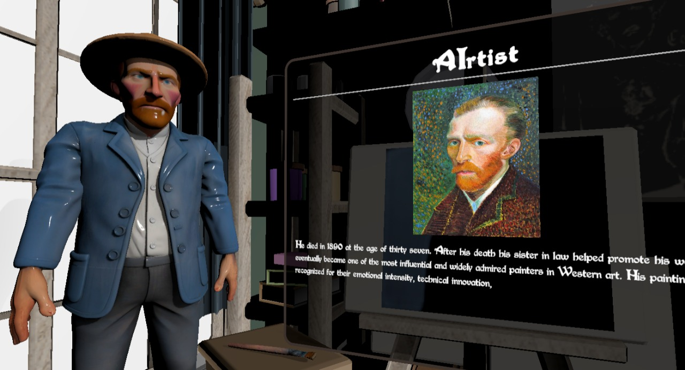
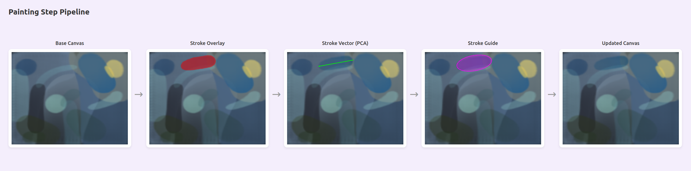
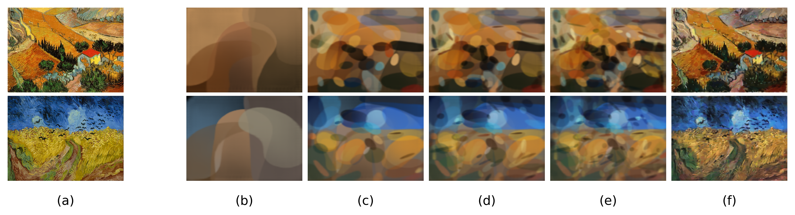
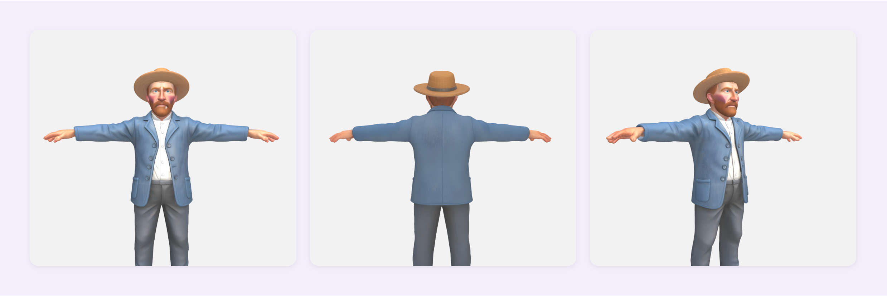

Procedural Art Insight
Static exhibitions offer observation, not participation. AIrtist makes the stepwise construction of a masterpiece the learning object, giving users embodied procedural understanding of Van Gogh's Impasto technique.
IEEE AIxVR 2026
An immersive VR framework that bridges art history education and interactive painting by reverse-engineering a DRL painting agent into human-interpretable geometric stroke guides.
Advanced Knowledge Center for Immersive Technologies (AKCIT), Federal University of Goias
The preservation and dissemination of cultural heritage relies on accessibility, yet traditional museum experiences remain passive, offering visual appreciation without procedural insight into artistic creation. AIrtist is an immersive VR framework on the Meta Quest 3 that bridges art appreciation and interactive engagement by focusing on the works of Vincent van Gogh. A theoretical learning phase driven by LLMs and ElevenLabs TTS delivers contextual narration, while a gamified painting phase grounded in Deep Reinforcement Learning guides users through reconstructing a masterpiece stroke by stroke. A novel stroke analysis engine employing PCA and connected component labeling on differential frame masks translates the black-box DRL output into geometric vector guides rendered directly on the virtual canvas. Qualitative results demonstrate that the pipeline successfully decomposes texture-rich paintings into coherent, interactive steps.
Static exhibitions offer observation, not participation. AIrtist makes the stepwise construction of a masterpiece the learning object, giving users embodied procedural understanding of Van Gogh's Impasto technique.
The "Learning to Paint" model is a black box. AIrtist's stroke analysis engine converts its incremental frame differences into PCA-derived geometric ellipses that a human can follow inside VR.
Although the current implementation focuses on Van Gogh, the DRL decomposition and stroke analysis pipeline is designed to generalize to any artist whose technique can be decomposed by the painting model.
Mt(x,y) = 1 if |Ft+1 - Ft| > tau
PCA(pixel coords of Mt)
-> centroid, orientation, ellipse
The first principal component gives stroke orientation; the ellipse acts as a smoothed region-of-influence guide rasterized back onto the canvas for the VR overlay.




Synthesizes verified art history context into audio-visual narratives via LLM conditioning and TTS, delivering multimodal instruction aligned with dual-coding learning theory.
Reverses the output of DRL painting agents into geometric vector guides using differential frame masking, connected component labeling, and PCA, overcoming the black-box nature of neural rendering.
Integrates both modules on the Meta Quest 3 as a validated interaction loop where users physically replicate each stroke, gaining embodied understanding of complex Impressionist composition.
Demonstrates that AI can serve not just as a creator of art but as a structural decoder, opening a new modality for cultural heritage appreciation beyond passive observation.